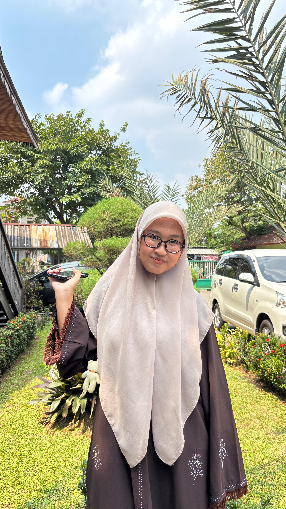
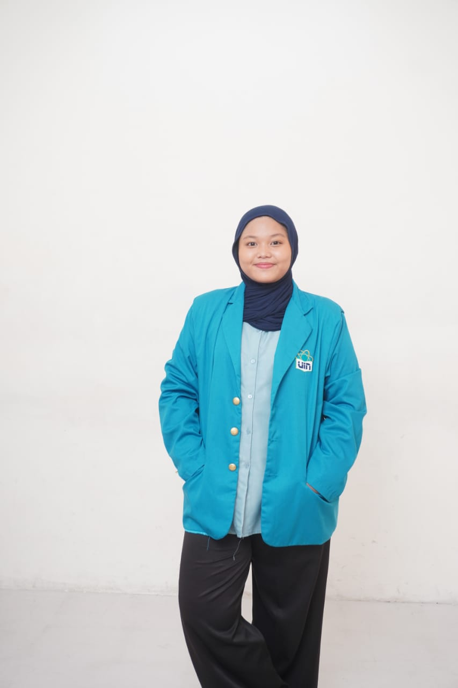

Ketua PMR — MA Al Falah
- Mengoordinasikan anggota dan setiap divisi.
- Menyusun program kerja serta melakukan evaluasi kegiatan.
- Mengadakan bakti sosial, penggalangan dana, dan kegiatan donor darah.
Website sederhana untuk menampilkan profil, pendidikan, pengalaman organisasi, dan keterampilan. Pilih profil untuk melihat CV lengkap.
Tiga profil mahasiswa dengan pengalaman dan minat yang berbeda.

Teliti, komunikatif, dan memiliki pengalaman dalam administrasi serta organisasi sekolah.
Lihat CV ↗
Mahasiswa Manajemen Pendidikan dengan pengalaman mengajar dan kegiatan organisasi.
Lihat CV ↗
Aktif dalam organisasi, kepanitiaan, relawan, dan penulisan artikel ilmiah.
Lihat CV ↗
Saya tertarik mencoba hal baru dan mengembangkan kemampuan diri. Memiliki kemampuan mengatur waktu dan keuangan, menggunakan Microsoft Word, memeriksa detail pekerjaan, serta berkomunikasi dan berpikir logis.
Ketua PMR — MA Al Falah
Sekretaris PMR — MA Al Falah
Anggota Perpustakaan OSIS — MA Al Falah
MAS Al Falah
Mahasiswa S1 Manajemen Pendidikan yang memiliki pengalaman dalam organisasi, pengajaran, dan kegiatan kampus. Tertarik mengembangkan kemampuan komunikasi, kepemimpinan, serta kontribusi di bidang pendidikan.
Guru — Pondok Pesantren Nurussalam
Pengurus OSIS — Divisi Pengajaran dan Ibadah
Pengurus Konsulat — Divisi Pengajaran dan Ibadah
UKM HiQMa — UIN Jakarta
UIN Syarif Hidayatullah Jakarta
MA Daarul Rahman Jakarta
MTs Daarul Rahman Jakarta
MI Nurul Hidayah
RA Miftahul Jannah
Juara 1 Kaligrafi antar kelas MI
Juara 1 MTQ antar kelas Tsanawiyah/Aliyah
Juara 2 Solo Sholawat tingkat remaja
Mahasiswa Manajemen Pendidikan di UIN Syarif Hidayatullah Jakarta yang tertarik pada bidang pendidikan, organisasi, dan pengembangan diri. Memiliki pengalaman organisasi sekolah, kepanitiaan, kegiatan relawan, serta publikasi artikel ilmiah. Terbiasa bekerja sama dan membuat konten digital.
Ketua Sekbid II Kominfo — OSIS MAS Khazanah Kebajikan
Sekretaris — OSIS MAS Khazanah Kebajikan
Panitia LDKS
Volunteer Amgala
UIN Syarif Hidayatullah Jakarta
“Menelusuri Jejak Pancasila dalam Bangsa Indonesia”